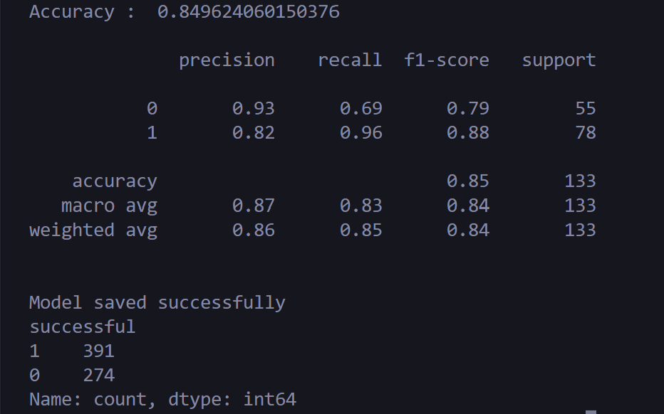

GITHUB SUCCESS PREDICTOR.
Exploring machine learning to predict GitHub repository success.
01 / PROJECT OVERVIEW
GitHub Success Predictor is a machine-learning project that analyzes repository data to classify repositories into two categories based on a target label.
The project uses a dataset of 665 cleaned records to train a classification model. Its goal is to explore whether patterns in repository data can help distinguish between the two classes.
The model achieved approximately 84.96% accuracy on the evaluation set, containing 133 examples.
The exact meaning of each class depends on the label definitions used in the dataset. Predictions indicate learned patterns, not guaranteed future success.
02 / MODEL RESULTS

03 / KEY FEATURES
- Works with a cleaned dataset of GitHub repository records.
- Trains a machine-learning classification model.
- Classifies records into two target categories.
- Evaluates performance using accuracy, precision, recall and F1-score.
- Displays a classification report for both classes.
- Saves the trained model for potential reuse.
04 / MODEL PERFORMANCE
The model correctly classified approximately 85% of the 133 examples in the test set.
When the model predicts unsuccessful, it is correct about 93% of the time. It identifies 69% of all actually unsuccessful repositories in the test set.
The model identifies 96% of actually successful repositories in the test set. When it predicts successful, it is correct about 82% of the time.
Precision measures how reliable a prediction is. Recall measures how many actual examples of a class the model identifies. F1-score balances precision and recall.
05 / DATASET INSIGHTS
The cleaned dataset contains 665 records. The target column contains the following class counts:
The dataset contains more class 1 records than class 0 records. Evaluating both precision and recall helps provide a more complete picture than accuracy alone.
06 / WHAT I LEARNED
- Preparing and cleaning data for machine learning.
- Training and evaluating a classification model.
- Understanding precision, recall, F1-score and accuracy.
- Examining class distribution in a dataset.
- Saving a trained model for later use.
07 / TECH STACK
08 / PROJECT LINKS
Explore the source code or access the project using the links below.